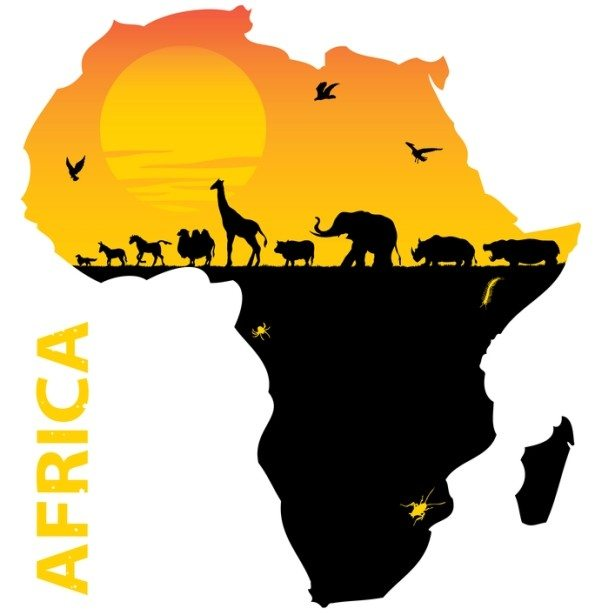
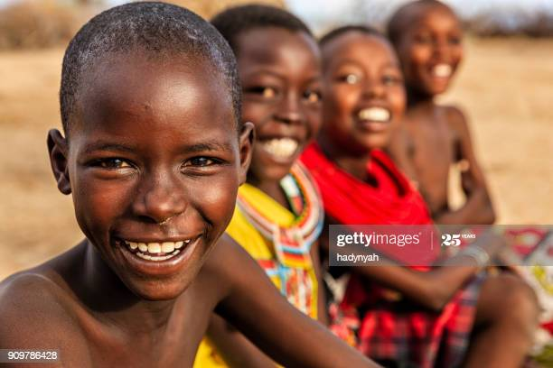

1. THERE ARE 54 COUNTRIES IN AFRICA Africa is the second largest continent in the world and boasts more countries than Asia the largest continent in the world. In alphabetical order, the countries are as follows: Algeria, Angola, Benin, Botswana, Burkina Faso, Burundi, Cameroon, Cape Verde, Central African Republic, Chad, Democratic Republic of the Congo, Djibouti, Egypt, Equatorial Guinea, Eritrea, Ethiopia, Gabon, Gambia, Ghana, Guinea Bissau, Guinea, Ivory Coast, Kenya, Lesotho, Liberia, Libya, Madagascar, Malawi, Mali, Mauritania, Mauritius, Morocco, Mozambique, Namibia, Niger, Nigeria, Republic of the Congo, Reunion, Rwanda, Senegal, Seychelles, Sierra Leone, Sao Tome & Principe, Somalia, South Africa, Sudan, Swaziland, Tanzania, Togo, Tunisia, Uganda, Western Sahara, Zambia and Zimbabwe. 2. AFRICA COVERS 30 MILLION SQUARE KILOMETRES Africa is a huge continent and it is divided up into five sub-sections; North Africa, East Africa, Central Africa, Southern Africa and West Africa. The entirety of Africa covers almost 10 million square miles which makes up more than 20% of the world’s land! 3. THE MOST WIDELY SPOKEN LANGUAGE IS ARABIC This may be a somewhat surprising fun fact about Africa. Due to the fact that there are 54 countries in Africa, there are many different languages spoken. However, the most widely spoken language here is Arabic (by 170 million people), followed by English (by 130 million people) then Swahili, French, Bereber, Hausa and Portuguese. There are also many different languages that are spoken here which we doubt that you have even heard of… 4. THERE ARE MORE THAN 2,000 RECOGNISED LANGUAGES Over a quarter of all of the different languages that are spoken in the world are spoken in Africa in their relative regions. There are over 2,000 different recognised languages spoken in Africa, around 200 of these are spoken in Northern Africa including Central Sahara and are known as Afro-Asiatic languages, 140 are spoken in Central and Eastern Africa known as Nilo-Saharan languages and more than 1,000 are Niger-Saharan languages. 5. ILLITERACY IS AS HIGH AS 40% ACROSS THE CONTINENT Although Africa holds many different resources it is a continent where many of the countries have vast numbers of their populations living in poverty. This has led to 40% of adults in Africa being illiterate. The worst affected areas, with shocking illiteracy over 50% are in Ethiopia, Chad, Gambia, Sierra Leone, Senegal, Niger, Benin and Burkina Faso.
